Andy Roddick's Backhand¶
John Yandell¶
In this series of articles we've taken a close look at the two-handed backhand in pro tennis and broken it down into the commonalities and the differences among the various players and styles. (link.) We've looked at many or even most of the great two-handers in the game. But you may have noticed there is one player we haven't looked at or analyzed: Andy Roddick. Until now, that is.
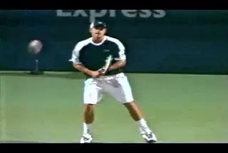
Why haven't we looked at Andy's backhand before?
How Bad is Terrible?
It's widely accepted in the high performance coaching community that Andy's backhand is a limiting factor in his game. And that is probably true, as we'll see. But when we critique the stroke of a player who has won the U.S. Open and been number 1 in the world, I think we need to be careful about making wild statements. Some media commentators and coaches are quick to call Andy's backhand "terrible" or a "disaster." But those are relative terms--really, really relative terms. Andy could use that "terrible" backhand of his to smack the hell out of 99.99% of all tennis players on planet earth. It's only against a handful of players at the top of the world game that the relative strength or weakness of the shot may come into play.
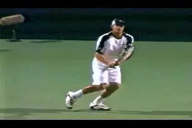
Andy has many technical elements in common with all two-handers.
It's true that in that rarified world, Andy's backhand isn't a weapon in the same way as the backhands of Andre Agassi or Rafael Nadal. It's also obvious, especially if you see him play in person, that he doesn't hit his backhand with the same velocity as his forehand or the backhands of other top two-handed players. It's fair to say he sometimes has trouble hitting winners or passing shots up the line, or hitting on the run. So the question becomes this: can we find any technical elements that may account for the relative weakness of the shot? I think the answer is yes.
If we look at Andy's fundamentals we can see that much of what he does is sound and technically indistinguishable from other two pro two-handers. For example he has a full body turn and sets up in the various stances the same way as the other players. His extension, followthrough, and wrap are all similar.
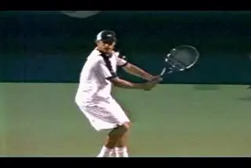
Notice the bottom hand grip and how far away from his body Andy starts the forward swing.
But if we apply our previous analysis of the structure of the grips and the hitting arms to Andy's backhand, we can see something that is significantly different from other top players. With his grip structure and hitting arm configuration, he has to start his forward swing from a position a lot further away from his body and this is probably the difference compared the great two handed shots.
\ Andy: Bent/Straight
We saw in one of the previous articles how we can group the two-handed players according to the hitting arm configurations they use. We saw that there are 4 basic configurations. (link.) We also saw that most men hit with what we called a "Bent/Straight" combination, with the front arm bent and the rear arm straight at the contact. Andy definitely falls into that category.
If we compare him closely to the other top men with the same Bent/Straight configuration, it's obvious that Andy's backhand is different when it comes to the grip, and also the shape of the forward swing.
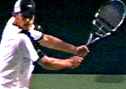
Andy's doesn't really hold a backhand grip with the bottom hand compared to other Bent/Straight two-handers.
Let's start with the grip. Virtually all of the men who hit Bent/Straight shift the grip with the lower or right hand to some version of a backhand grip. With some of them such as Nalbandian or Coria, the grip shift is relatively mild, a shift to some version of a continental grip. But some of the Bent/Straight guys have stronger grip shifts, in fact some of the stronger bottom hand grips of all the two handers we've looked at.
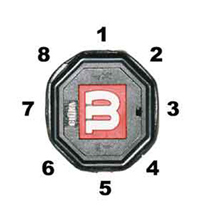
To have some version of a backhand grip the index knuckle need to reach Bevel 2, with at least some of the heal pad on Bevel 1.This includes players like Lleyton Hewitt and Carlos Moya . We can see that these players rotate the index knuckle upward until it is at the edge between the first and second bevel, or sometimes maybe over that edge. Regardless of the exact grip positioning, all these players could easily drop off the back arm and hit a one-handed backhand drive.
I doubt Andy could do that. This is because he doesn't make that same grip shift. He definitely changes his grip, but just not far enough to be called a true backhand grip. As we saw in the forehand series, he has an extreme semi-western grip. And his hand rotates significantly toward the top of the frame when he prepares to hit his backhand. (link.) but his grip doesn't go as far as the other players with his hitting arm combination. It's hard to tell down to the exact millimeter even with the high speed video, but Andy's grip looks more like an old style eastern forehand, with his index knuckle somewhere between bevel 2 and bevel 3. If his heel pad is on the top bevel at all, it's only a very small portion.
Now there isn't necessarily a fatal problem with that grip, but that depends on the hitting arm combinations. Some of the top women's players use this same "weaker" grip with the bottom hand, for example Venus and Serena Williams. The difference is that Venus and Serena are hitting a different version of the two-hander, what we have called "Bent/Bent." This is the version that is most like a left handed forehand. In the Bent/Bent version more of the energy and drive appears to be coming from the left arm, which is set up in a hitting arm position similar to the forehand with the elbow bent and tucked in toward the body.
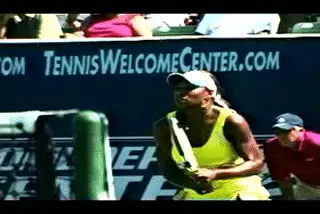
A weaker grip works fine with the Bent/Bent arm configuration.
It's also important to note that there are top players, maybe even the majority, that hit the Bent/Bent version and make a stronger grip shift. These include Maria Sharapova and Lindsay Davenport, and on the men's side, Goran Ivanisevic and Nickolay Davvdenko. And that may or may not be a better option. But the Bent/Bent stroke definitely will work and can be effective at the tour level with a weaker grip with the bottom hand.
The same doesn't seem to be true with the Straight/Bent combination. Roddick is the only player I have seen so far in the Advanced Tennis high speed video that uses the Bent/Straight hitting arm configuration with such a weak grip with the bottom hand. Unlike the Bent/Bent version, this seems to make an obvious difference in the way the swing works.
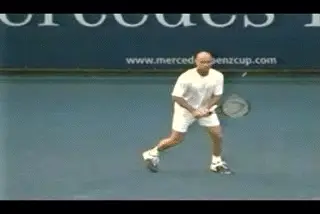
Andy starts like Andre but goes more outside.
If we look at the shape of his motion and compare it to the other top men, we can see some noticeable differences in the position of the hands and racket. Andy starts his backswing with a movement similar to Andre Agassi, taking the hands back low, but also somewhat out to the side. In fact, Andy seems to go even a little further out and away from his body than Andre.
The difference is that from this position, Andre comes back inside much closer to his torso before starting to swing forward. Andy goes out, but he doesn't come back nearly as far inside. The result is that Andy starts his forward swing from a position that is much further from his body than Andre, or any of the other top players I've studied, regardless of the hitting arm configuration.
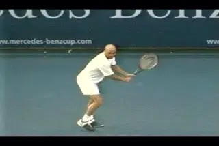
Watch how much further Andre comes back inside compared to Andy.
Why is that important? This inside position with the hands and racket is a commonality across all the hitting arm variations. The swings on the all groundstrokes in tennis follow an inside out path out toward the contact. To do this, the hands need to start forward from a position relatively close in to the body. This positioning is related to the creation of natural body leverage and the way the hands and the torso work together in the forward swing.
The exact position of the hands at the start of the swing and the curve of the arc of the inside out swing can vary somewhat from player to player. Some players are closer to the body than others. When we have 3D we will be able to measure this and learn more about the motions and also the differences between the players.
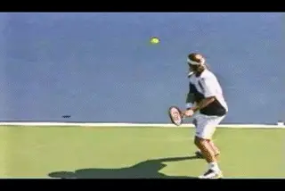
Watch these Bent/Straight players swing from the inside out.
But what we can see for sure is that Andy starts forward from further outside than any other player, even further than Carlos Moya, who is also quite far away with his hands and uses the same Bent/Straight hitting arm configuration as Andy. Andy is probably is still swinging slightly inside out to the ball on most balls, but sometimes it appears he is coming to the ball directly forward, almost in a straight line.
So what does it mean? I think it has do with the relationship between the hands at the start of the forward swing. For whatever reason, the Bent/Straight configuration seems to rely on more of an initial "pull" with the bottom hand. Remember the back arm is straight. I think this may give it less of a role in the first part of the forward swing. The players who use the back arm more seem to use the Bent/Bent hitting arm position. This makes sense because the bent left arm is similar to the hitting arm position on the forehand.
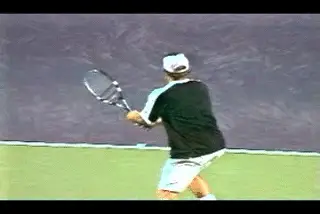
A rear view showing that Andy starts to the ball from even further out than Carlos Moya.
My hypothesis is that this is why the Bent/Straight guys often have stronger grips with the bottom hand. They need to use more front arm. Try it yourself. When you turn your hand more on top of the frame, you can pull more with the front shoulder from an inside position.
Ironically, this is why Andy doesn't come back inside. With his grip, it's actually more difficult to pull with the front arm from an inside position. Try it yourself. You can actually pull more with the bottom hand from a position further outside, close to where Andy starts his swing.
The bottom line is this has got to result in less effective use of the front arm. And with the Bent/Straight configuration, the rear arm isn't able to compensate. This is different from the Bent/Bent configuration in which the left arm is able to drive the racket as it would on a forehand.
Does that make his backhand "terrible"? Like I said Andy's backhand could still blow the vast majority of all players in the history of the game off the court. But I think it is fair to say he has a technical weakness or flaw that will probably prevent him from ever reaching his real potential on that side.
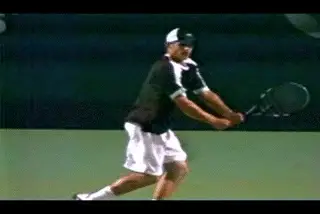
On the run his leverage seems limited to a push with the back arm.
You can see this most clearly when he is on the run. Watch how his front arm just bails out of the swing, leaving him with no option but a short push with the rear arm. It just doesn't look strong and this is probably the difference when he has to go down the line or has to pass up the line.
So why don't I just call Andy up and explain it to him so he can start winning Grand Slam tournaments again? I say that facetiously, but I have been asked that question in all seriousness at coaching conferences where I've presented this analysis. I got a good laugh at one convention, when someone who had seen my talk asked Brad Gilbert about the relationship between Andy's grip and his hitting arm positions in a question and answer session. (This was while he was still with Andy.) Brad's response? "Next question, please."
The problem is that even seemingly small changes--a little stronger grip with the bottom hand or a closer hand position to the torso--are actually huge at the world class level. It relates to the critical confidence factor. Someday I'll write an article about the amazing experience I had with Paul Annacone when he was coaching Pete Sampras. I had the chance to show Paul a video analysis I did of Pete's backhand, including some of the subtle differences in Pete's swing when he missed his backhand drives, compared to the ones he nailed. Paul saw exactly what I saw in the video and he and I had a great talk about it. At the end I asked him if he wanted to take it to Pete.
"No way!" he said. "Mind if I ask why?" I asked. "Because Pete doesn't think there's anything wrong with his backhand," was his answer.
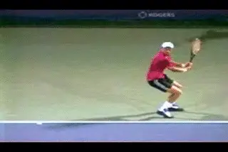
Understanding the pro hitting arm positions may increases the chance that other players will develop the right combinations for themselves.
That may sound crazy, but actually it makes complete sense if you understand players. The point is that for a player at the world class level, admitting that there is a significant technical problem on a particular stroke could cause a loss of overall confidence that might have a worse negative effect than the technical problem itself. That's what Paul believed about Pete anyway, and I guess he was right because Pete sure hit some beautiful backhands in that last, amazing Open final.
This issue of confidence is actually a huge problem for any player at any level contemplating deconstructing a stroke. There is a high likelihood the process may initially or even permanently increase his frustration and have a negative impact on his results. Trying to overcome the natural resistance of the student that stems from this just may be the biggest problem in coaching at all levels.
That's why I hope that one of the things that comes out of this high speed analysis of the various two-handed combinations--and the whole revolution in video analysis--is this: a better understanding of how the variations are hit and the elements that go into the specific combinations.
You never know, Andy may surprise us all, make a stronger grip shift and start smacking backhand winners and passing shots on the run. But I doubt it. Still, if I could wish for one thing it would be that the look that high speed video has given usan insidelook at the two-hander that can help younger players develop the right combination of grip and arm positions for their natural abilities and game style. The better the information young players have in developing their games, the fewer limitations they may face later on--especially if they get to the top of the world like Andy.

John Yandell is widely acknowledged as one of the leading videographers and students of the modern game of professional tennis. His high speed filming for Advanced Tennis and TPA have provided new visual resources that have changed the way the game is studied and understood by both players and coaches. He has done personal video analysis for hundreds of high level competitive players, including Justine Henin-Hardenne, Taylor Dent and John McEnroe, among others.
In addition to his role as Editor of TPA he is the author of the critically acclaimed book Visual Tennis. The John Yandell Tennis School is located in San Francisco, California.
← Nadal's Forehand | Advanced Tennis Index | Murray and the Open-Stance Forehand →